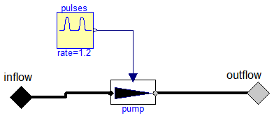

Utility components used by package KofranekModels2013
Information
Extends from Modelica.Icons.UtilitiesPackage (Icon for utility packages).
Package Content
| Name |
Description |
 HeartPump HeartPump
|
Heart as pump, which flowrate is determined
by the StarlingSlope and filling pressure. |
 PulsatileHeartPump PulsatileHeartPump
|
Heart as pump, which flowrate is determined
by the StarlingSlope and filling pressure. |
Heart as pump, which flowrate is determined
by the StarlingSlope and filling pressure.
Parameters
Connectors
Modelica definition
Heart as pump, which flowrate is determined
by the StarlingSlope and filling pressure.

Parameters
Connectors
Modelica definition
Automatically generated Tue Sep 15 22:52:24 2015.
 Physiolibrary.Hydraulic.Examples.Kofranek2014.Parts.HeartPump
Physiolibrary.Hydraulic.Examples.Kofranek2014.Parts.HeartPump Physiolibrary.Hydraulic.Examples.Kofranek2014.Parts.PulsatileHeartPump
Physiolibrary.Hydraulic.Examples.Kofranek2014.Parts.PulsatileHeartPump